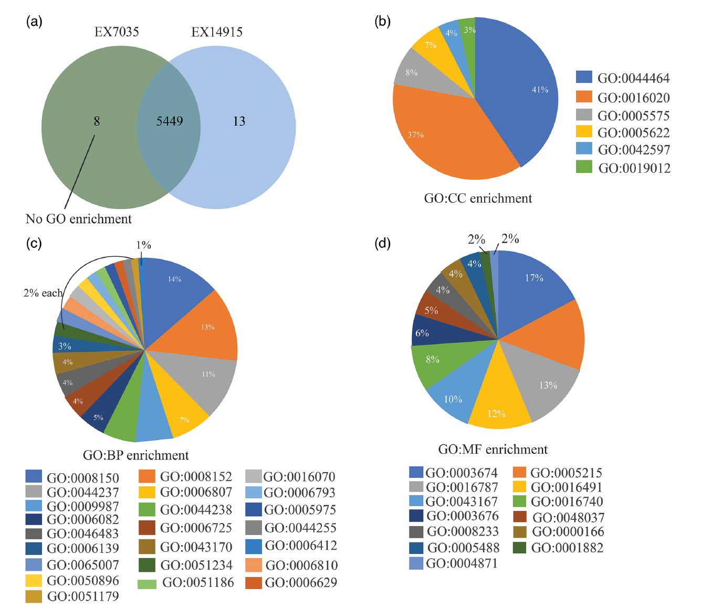
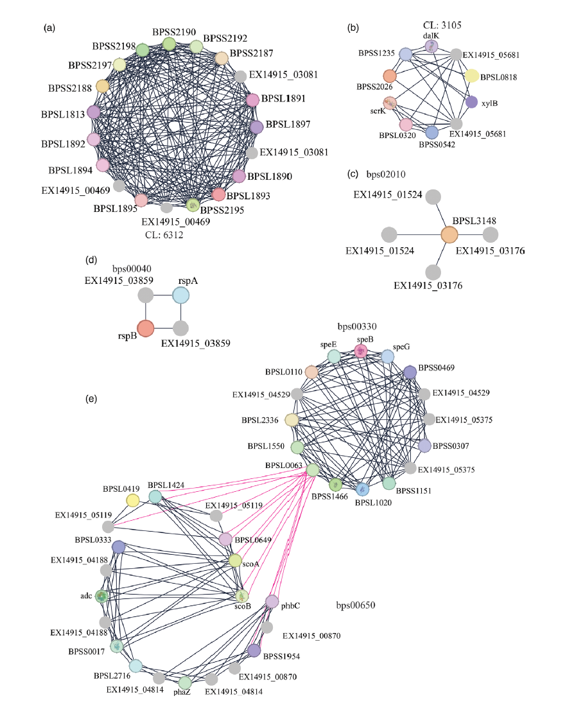
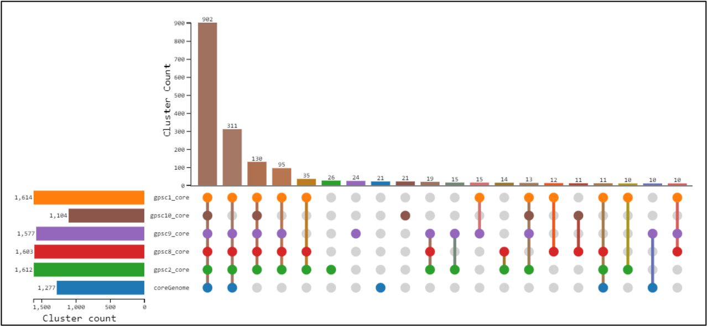
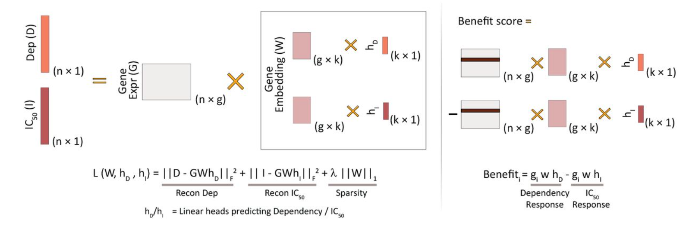
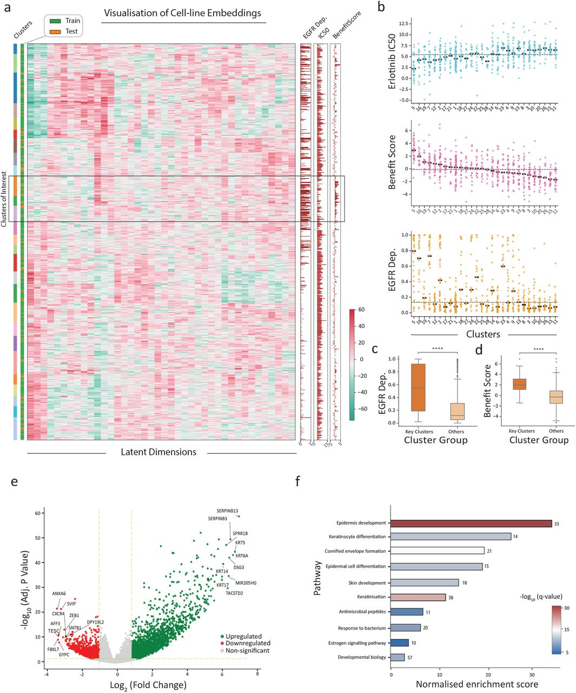
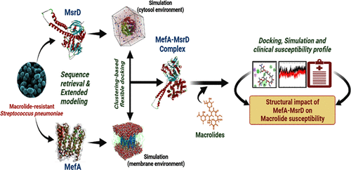
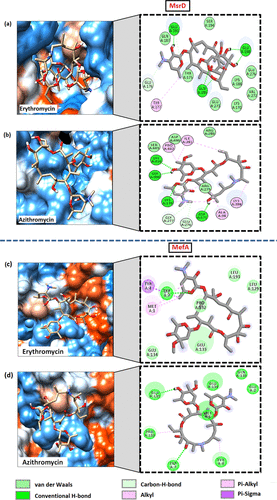
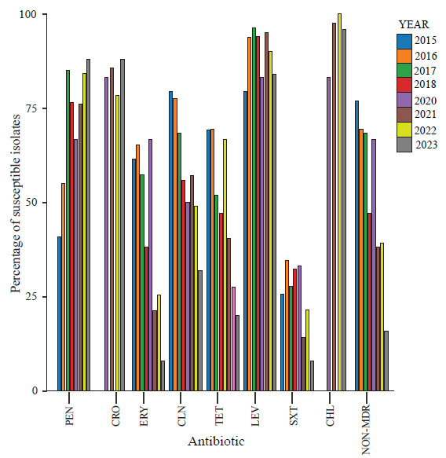
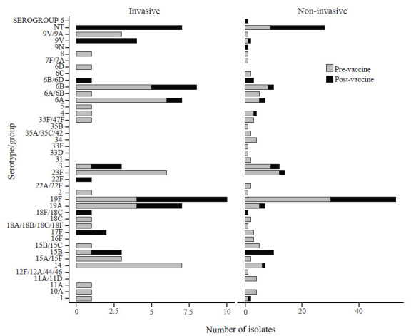

Genomic Stability in Recurrent Melioidosis


A high-resolution study of longitudinal B. pseudomallei isolates revealing a surprisingly low mutation rate and strong within-host conservation over six months.
- Identified extremely low within-host mutation rates during chronic infection - only 2 missense variants.
- Inferred isolate-specific virulence determinants using functional interaction networks.
- Provided insights into persistence mechanisms of B. pseudomallei in human hosts.
Publication: Journal of Medical Microbiology (2023)
GPSC-specific core and pangenomes in India

Population-scale genomic analysis of 618 Streptococcus pneumoniae isolates from India. Core genome inference among key Global Pneumococcal Sequence Clusters (GPSCs) revealed relatively smaller GPSC10 core genomes with pervasive and stable antimicrobial resistance.
- Mapped resistance determinants within lineage-specific core genomes.
- Highlighted GPSC10 as a high-risk genotype with widespread AMR.
- Generated evidence relevant to genomic surveillance and vaccine policy.
Preprint: bioRxiv (2024)
FORGE as a joint-matrix factorization for cancer drug susceptibility


A joint matrix factorisation framework (FORGE) was developed integrating baseline gene expression, gene dependency, and drug response using simple linear components. This design preserves interpretability while capturing biologically meaningful latent structure.
- Proposed an interpretable alternative to deep learning for drug response prediction.
- Derived gene-level benefit scores linking dependency and IC50 responses.
- Recovered known resistance mechanisms and proposed novel candidate drivers.
- Demonstrated model transferability by validating on xenograft and single-cell datasets.
Preprint: bioRxiv (2025) (accepted in Nature Communications 2026)
Understanding macrolide efflux mechanisms


Protein models for MefA and MsrD were constructed and drug interactions inferred.
- Modelled MefA and MsrD proteins responsible for macrolide efflux in streptococci.
- Docking and MD simulations identified key residues involved in drug binding.
- Provided insights into drug efflux mechanisms within the MefA-MsrD complex.
Publication: ACS Omega (2023)
Surveillance of drug resistance in pneumococcus


Surveillance of drug resistance and associated mechanisms in pneumococcus.
- Compared drug resistance profiles of ~300 isolates collected across pre- and post-vaccine eras.
- Inferred emerging resistance to penicillin, high rates of macrolide and tetracycline resistance.
- Serotype dynamics revealed persisting 19F and 19A serotypes in the post-vaccine era.
Publication: Indian Journal of Medical Research (2024)